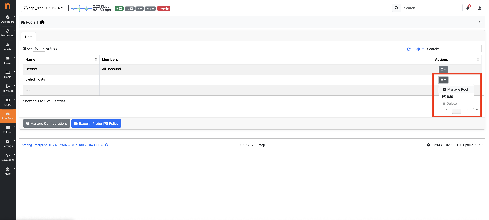
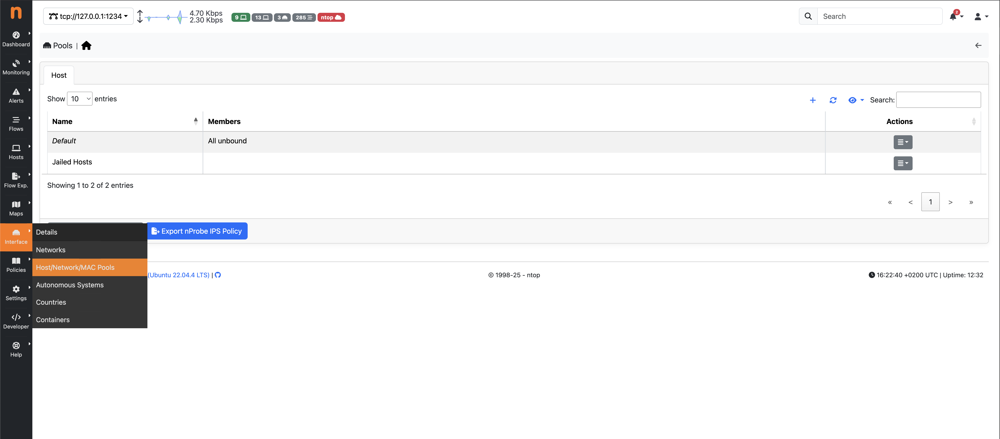
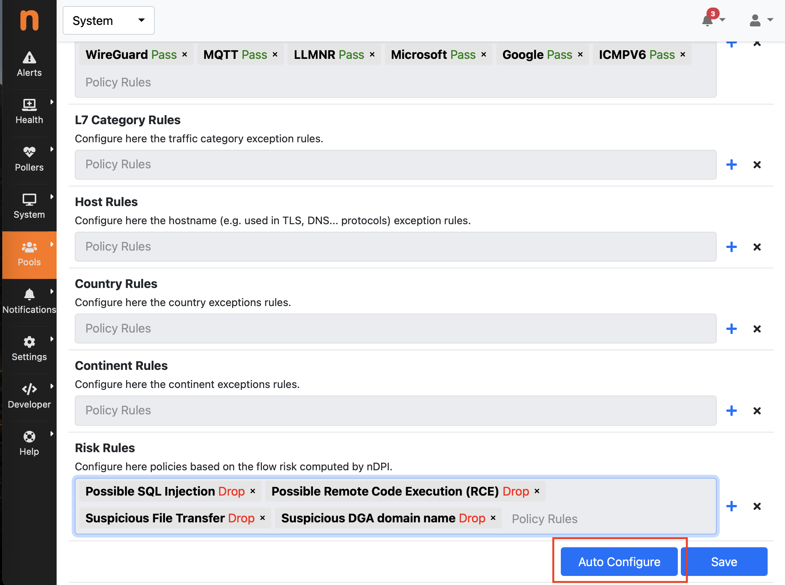

Использование ntopng с nEdgeLite
ntopng можно использовать для обеспечения соблюдения политик трафика при использовании в сочетании с nEdgeLite.
Примечание
Требуется лицензия ntopng Pro или Enterprise.
Политики трафика автоматически экспортируются в nProbe после изменения конфигурации политик или когда новый экземпляр nProbe подключается к ntopng через ZMQ. Чтобы опубликовать политики на дополнительном канале ZMQ настройте конечную точку ntopng ZMQ для событий IPS. Пример:
nedgelite -q 0 -z tcp://ntopng-host:5556 -p tcp://ntopng-host:5557
ntopng -i tcp://127.0.0.1:1234 --zmq-publish-events tcp://*:5557
Пожалуйста, обратитесь к Документация nEdgeLite для большего подробности о конфигурации nEdgeLite и интеграции ntopng.
Для каждого пула хостов можно настроить разную политику трафика (см. Хост-пулы), выбрав пул для редактирования, в раскрывающемся значке (столбец «Действия») нажмите «Управление пулом».

Страница пула хостов
затем на кнопку «ключ» в Интерфейс > Пулы хоста/сети/MAC страница для редактирования выбранного пула.

Страница редактирования пула хостов
Конфигурация политик включает политику по умолчанию, которая может быть Pass или Drop (запретить по умолчанию), и более конкретные правила, которые можно использовать для настройки исключений относительно политики по умолчанию, в том числе:
L7 Правила протокола приложения
L7 Правила категории
Правила хоста для настройки имен хостов, используемых, например, в протоколах TLS и DNS.
Правила страны
Континентальные правила
Правила риска для применения политик на основе риска потока, рассчитанного nDPI

Страница правил дорожного движения
Ан Автоматическая настройка также доступна функция автоматического создания рекомендуемой конфигурации. для политики трафика, используя протоколы/хосты, видимые ntopng для устройств, принадлежащих пулу (обратите внимание, что ntopng должен работать не менее 1 дня, чтобы получить наилучшие результаты). Обратите внимание, что это конфигурация представляет собой предполагать и должен быть точно настроен вручную. Эта функция особенно полезна в случае устройства, которые должны использовать ограниченный/статический набор сервисов, как в случае IoT-устройства например. В этом случае Политика по умолчанию установлено значение «Отбросить» (Запретить по умолчанию) и Автоматическая настройка функциональность добавляет те протоколы L7 и имена хостов, которые действительно необходимы для работы устройства. (по историческим данным). Чтобы заселить Правила хоста, Самые посещаемые сайты эвристика должно быть включено в разделе Настройки > Предпочтения > Приложения.

Функция автоматической настройки